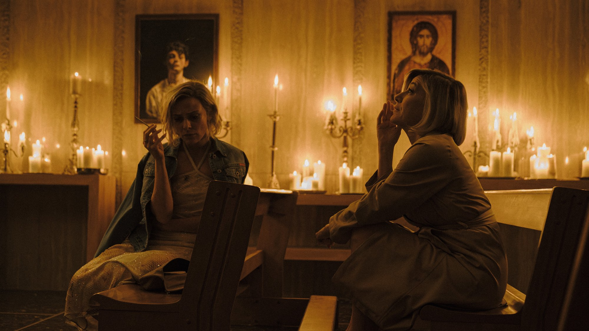
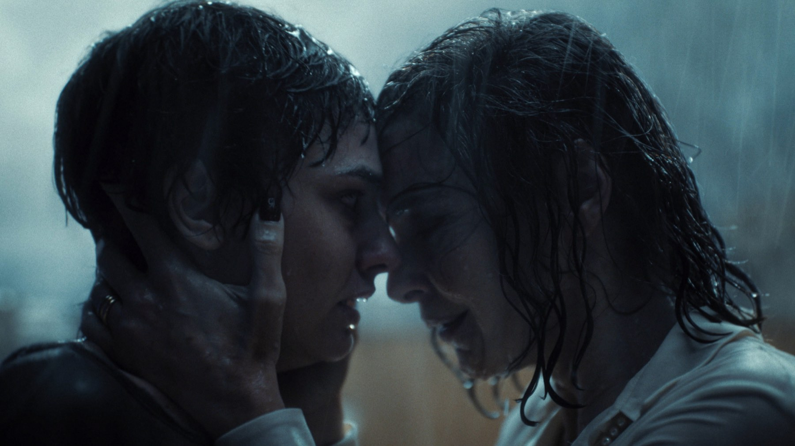
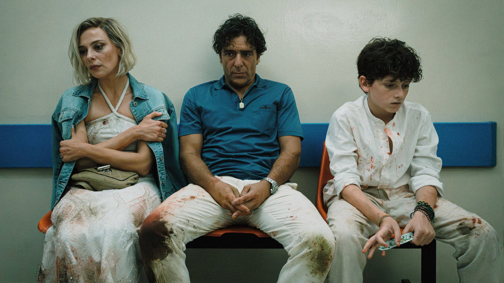
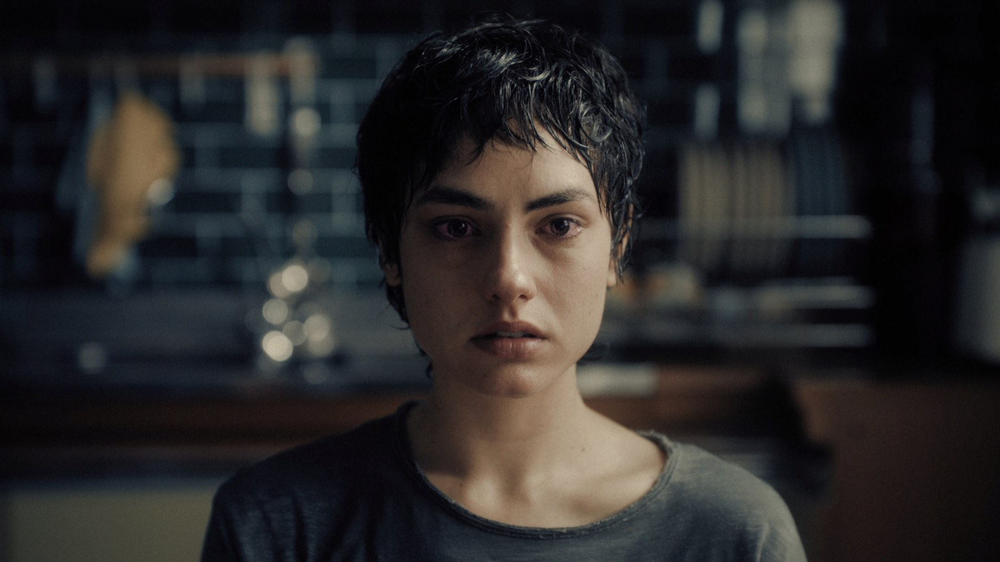

L'estranea, la recensione: Strippoli fa paura in famiglia
Una madre bussa alla porta della figlia dopo ventisette anni e porta con sé un patto. Il film italiano scelto per gli Oscar è un thriller di famiglia che fa paura senza alzare la voce: andateci al buio
Piove su San Lorenzo, a Roma. Una donna che non si vede da ventisette anni suona al citofono della figlia e chiede di salire. Non porta regali né scuse: porta una storia, quella di un patto stretto quando la bambina era piccola con una donna che nessuno in famiglia nomina volentieri. Da questa visita comincia L'estranea, l'opera con cui Paolo Strippoli smette di essere una promessa del cinema di genere italiano e diventa un autore con cui fare i conti. L'abbiamo visto in sala la sera del 10 ottobre e la cosa più onesta che possiamo dirvi è questa: andateci, e andateci sapendo il meno possibile.
Di cosa parla L'estranea (senza spoiler)
Anna, interpretata da Jasmine Trinca, ha lasciato dietro di sé un vuoto e adesso vuole riempirlo con la verità. Romana Maggiora Vergano è Alice, la figlia che quella verità non l'ha chiesta. Adriano Giannini è Walter, il marito di Anna, e Valeria Bruni Tedeschi è la donna del titolo: una presenza carismatica e ambigua legata a quel vecchio accordo. Il racconto si muove tra Roma e Bari e torna indietro nel tempo per ricostruire come una famiglia normale sia arrivata a spezzarsi.
Non diciamo altro, e non è prudenza di maniera. Buona parte della forza sta nel modo in cui le informazioni arrivano, una alla volta, e cambiano il significato di quello che si è appena visto. Il trailer ne anticipa più del necessario: se potete, evitatelo.

Che cosa fa paura in L'estranea?
Chi ricorda Piove, il film del 2022 in cui un vapore salito dalle fogne di Roma provocava allucinazioni, si aspetterà creature e corpi che cambiano. Qui Strippoli prende un'altra strada. La paura sta nelle stanze di casa, nelle cose non dette a tavola, nello sguardo di una madre che controlla la figlia anche quando la abbraccia. Il racconto lavora sui legami: il patto del passato pesa sui personaggi come un debito che qualcuno, prima o poi, verrà a riscuotere.
La critica italiana è quasi unanime nel parlare del suo lavoro più maturo. Cinematografo lo descrive come una tragedia psicologica fatta di silenzi e tensione domestica, Movieplayer lo premia con quattro stelle su cinque, Sky TG24 con un otto. È la stessa sensazione che abbiamo avuto noi: non c'è un minuto in cui cerchi lo spavento facile, eppure l'inquietudine cresce inquadratura dopo inquadratura.
Jasmine Trinca e Valeria Bruni Tedeschi: il duello al centro del film
Il cuore del film è lo scontro tra due attrici che recitano in modi opposti. Trinca lavora per sottrazione: la sua Anna è fragile e testarda insieme, una donna che si porta addosso un senso di colpa senza mai dichiararlo, e che per questo fa più male. Bruni Tedeschi fa l'opposto e occupa lo spazio con un'energia che seduce e mette a disagio nello stesso momento. Quando sono nella stessa inquadratura il film trattiene il respiro.
Romana Maggiora Vergano, che molti hanno conosciuto in C'è ancora domani, regge il ruolo più difficile: quello di chi subisce il racconto e deve decidere se crederci. Il suo personaggio è il nostro punto di vista, e funziona proprio perché non ne sa più di noi.

La regia: il miglior film di Paolo Strippoli?
Strippoli ha scritto il film con Salvatore De Chirico e lo ha costruito come un mosaico. La fotografia di Cristiano Di Nicola alterna la luce calda delle candele a interni freddi e bagnati, e quella differenza di temperatura racconta già da sola chi controlla chi. Le citazioni del cinema di paura europeo ci sono, e i cinefili le riconosceranno, ma non soffocano mai la storia.
Un difetto c'è, ed è quello che segnalano in più di una recensione: l'ultima parte si allunga più del necessario, e qualche passaggio di tono non è calibrato al millimetro. Sono limiti veri, ma pesano poco rispetto al coraggio dell'insieme. Il regista di La valle dei sorrisi ha firmato un titolo che non somiglia a nessun altro film italiano di quest'anno.
La nostra sintesiL'estranea fa paura come certe cene di famiglia: nessuno alza la voce, ma tutti sanno che qualcosa sta per rompersi.
Perché L'estranea è il candidato italiano all'Oscar
Il 23 settembre 2026 la commissione dell'ANICA lo ha preferito ad altri venti titoli: sarà lui a provare a portare l'Italia tra i cinque finalisti della categoria internazionale dell'Academy. Nella motivazione si parla di un film di genere nuovo, firmato da un autore giovane. È una scelta insolita per il nostro paese, che di solito manda all'Academy drammi d'autore più classici. A Venezia, dove era in concorso, ha ottenuto il riconoscimento ARCA CinemaGiovani riservato ai titoli italiani; a Toronto il pubblico della sezione Midnight Madness lo ha votato secondo. Il 15 dicembre si saprà se entra tra i quindici semifinalisti.

A chi consigliamo L'estranea
A chi ama i thriller psicologici e i film di paura che lavorano sull'atmosfera, da Hereditary in giù. A chi pensa che il cinema italiano sappia fare solo commedie e drammi: questo film è la prova del contrario. Lo sconsigliamo invece a chi cerca solo lo spavento, con mostri e salti sulla sedia, e a chi vive male le storie di famiglie ferite, perché qui il dolore è vero e non viene addolcito.
Due ore piene, 115 minuti, che vanno vissute al buio del cinema: il sonoro e i silenzi fanno metà del lavoro, e a casa si perderebbe molto. Uscendo, siate pronti a parlarne a lungo con chi era con voi.
L'estranea è il film più maturo di Paolo Strippoli e il thriller italiano più coraggioso dell'anno: due grandi attrici, una paura che nasce dai legami di sangue e una costruzione che vi tiene addosso il film per giorni. Il finale si allunga un po', ma è un difetto piccolo. Da vedere in sala, senza guardare il trailer.
Domande frequenti
Quando esce L'estranea al cinema?
È nelle sale italiane dall'8 ottobre 2026, distribuito da 01 Distribution.
Quanto dura L'estranea?
115 minuti.
L'estranea è un film horror?
È un thriller psicologico di famiglia con elementi horror: la paura nasce soprattutto dalla tensione tra i personaggi, non dagli spaventi improvvisi.
L'estranea è candidato all'Oscar?
È il titolo italiano in gara per la categoria del film internazionale agli Oscar 2027. I quindici semifinalisti saranno annunciati il 15 dicembre 2026.
Fonti consultate (9)
- Sky TG24 – L'Estranea, recensione di Paolo Nizza
- Movieplayer – L'estranea, recensione di Damiano Panattoni
- Cinematografo – L'estranea, recensione di Gian Luca Pisacane
- L'Espresso – L'Estranea, recensione di Gianmaria Tammaro
- Il Post – Che film è il candidato italiano all'Oscar
- Cinefilos – L'Estranea rappresenterà l'Italia agli Oscar 2027
- TMDB – L'estranea
- Wikipedia – Romana Maggiora Vergano
- Wikipedia – Piove (film 2022)